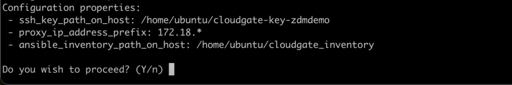
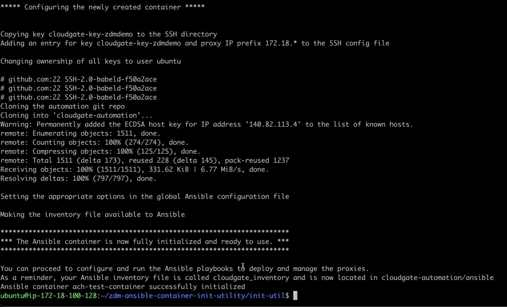
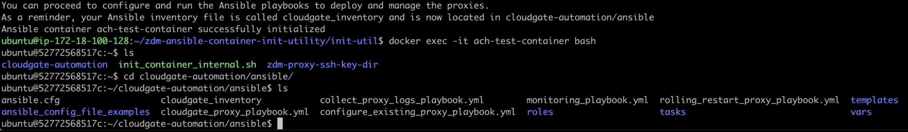

Setup and run Ansible playbooks to install ZDM Proxy and Monitoring
This topic explains how to use ZDM-Proxy Automation to create a dedicated deployment of the ZDM Proxy and its companion monitoring stack. The script is a Golang (Go) utility that walks you through the entire configuration process, prompting you for values needed by the Ansible playbook with helpful embedded explanations and error handling. It’s migration made easy.
Introduction
The ZDM deployment automation includes Ansible, which deploys and configures the proxies and monitoring stack via playbooks. This step expects that the infrastructure has been provisioned already.
Ansible is a suite of software tools that enables infrastructure as code. It is open source and the suite includes software provisioning, configuration management, and application deployment functionality.
Prerequisites
-
Create your SSH key pair, which you’ll use to access the ZDM infrastructure.
-
You must have already provisioned the ZDM infrastructure; which means you must have the server machines ready, and know their IP addresses.
That’s it! You’ll indicate which server machine will serve as the Ansible control host. In this topic, we’ll use a jumphost. A jumphost is a server on a network used to access and manage devices in a separate security zone, and provides a controlled means of access between them. The jumphost can be, for example, an Ubuntu server machine. On whatever machine you decide, connect to it and run the Go utility that implements the ZDM Automation script.
Let’s get started.
Create an SSH key pair for the ZDM deployment
Create a dedicated ssh key pair in your ~/.ssh directory, to use for all instances in the ZDM deployment:
ssh-keygen -t rsa|
Currently we are using |
When prompted, specify as key path and name ~/.ssh/cloudgate-key-<enterprise_name>. This will result in two files:
cloudgate-key-<enterprise_name>
cloudgate-key-<enterprise_name>.pub|
Create this dedicated key pair for each enterprise’s deployment and ensure you name it according to the pattern shown above. For example, a valid private key name could be |
Proxy deployment setup on the control host
The Ansible automation performs all the required operations to install and configure the proxy instances and their monitoring stack.
The control host needs to be able to connect to all other instances of the Cloudgate deployment. For this reason, it needs to have the key pair required by those instances.
The most important server at this point is the jumphost, which we’ll also use to serve as our Ansible control host. On that server, you can configure the cloudgate-automation/ansible/vars files, and then run the playbooks. This is where we’ll run the Ansible scripts so that we can provision all the cloudgate (ZDM) proxies.
There’s also a third purpose of the jumphost. We’ll use this server as a monitoring instance, with Prometheus and Grafana, to get metrics on all these proxies. Having these tools set up is especially useful during migrations when you’re running large workloads.
Add SSH keys to control host
From your local machine, transfer (scp) the Cloudgate key pair that you created in a step above — both public and private key files — to the ~/.ssh directory on the control host. Example:
scp -i ~/.ssh/cloudgate-key-<enterprise_name> ~/.ssh/cloudgate-key-<enterprise_name>* ubuntu@<control_host_address>:/home/ubuntu/.ssh/Now connect to the server that you intend to serve as the jumphost, specifying your private key.
ssh -F ~/.ssh/cloudgate_ssh_config jumphostAlso from your local machine, connect to the servers that comprise your Origin where Cassandra or DSE is running, and where the ZDM Proxy (cloudgate-proxy-<n> here) will run. Examples of separate logins:
ssh -F ~/.ssh/cloudgate-key-zdmdemo cloudgate-proxy-0
ssh -F ~/.ssh/cloudgate-key-zdmdemo cloudgate-proxy-1
ssh -F ~/.ssh/cloudgate-key-zdmdemo cloudgate-proxy-2Running the Automation’s Go utility
After you run the Go utility on the Ansible control host machine, as described in this section, you will have a fully functional Docker container that enables you to run the Ansible playbooks and provision the ZDM proxies.
-
Login to the server machine you want to use as the Ansible control host.
-
Run the Go utility provided by the ZDM project. (TODO: where is the executable located?)
-
For now (before executable is ready),
git clonethe GitHub repo, https://github.com/riptano/cloudgate-automation. -
cd ~/zdm-ansible-container-init-utility/init-util -
Run the Go utility:
go run main.go(TODO: this may change when this doc is updated with the executable location)
The utility creates and initializes the Ansible Control Host container. You’re initially prompted for any existing configuration file - press ENTER if you’re using the utility for the first time. Subsequent steps below assume this is our initial use of the Go utility.
The resulting configuration file that the Go utility creates will be named
ansible_container_init_configin your working directory. On subsequent runs of the Go utility, you can specify that config file. -
Enter the path to, and name, of your SSH private key to access the proxy hosts. Example:
/home/ubuntu/cloudgate-key-zdm-demo/ -
Enter the common prefix of the private IP addresses of the proxy hosts. Example:
172.18.*When you answer prompts from the Go utility, you have five attempts to enter valid parameters. You can always run the utility again, if necessary.
-
You’re asked if you have an existing Ansible inventory file. The Go utility will create one based on your answers to prompts, and we’ll assume this is your first time running the script. Enter
n.The created file will be named
cloud_inventoryin your working directory. -
Next, indicate if this deployment is for local testing and evaluation (such as when you’re creating a demo or just experimenting with the automation). In this example, we’ll enter
nbecause this scenario is for a production deployment. -
Now enter at least three proxy private IP addresses for the machines that will run the ZDM proxies that work with the migration steps, for a production deployment. (If we had indicated above that we’re doing local testing in dev, only one proxy would have been required.) Example values entered at the utility’s prompt, for production:
172.18.10.137 172.18.11.88 172.18.12.191+ To finish entering private IP addresses, simply press ENTER at the prompt.
-
Optionally, enter the private IP address of your Monitoring instance, which will use Prometheus data and Grafana to visualize the data. You can skip this step if you haven’t decided which machine to use for monitoring.
In this example, we’ll enter the same IP of the Ansible control host (the jumphost machine on which we’re running this Go utility). Example:
172.18.100.128At this point, the Go utility:
-
Has created the Ansible Inventory to the default file,
cloudgate_inventory. -
Has written the ZDM-Proxy configuration to the default file,
ansible_container_init_config. -
Presents a summary of the results thus far, and prompts you to Continue. Example:

-
-
If you agree, enter
Yto proceed.
The automation now:
-
Creates and downloads the image of the Ansible Docker container for you.
-
Runs the proxy configuration within the container.
-
Displays a message. Example:

Now you can run the created and configured Ansible playbooks. Example:
docker exec -it ach-test-container bashYou’re connected to the container, at a prompt such as this example:
ubuntu@52772568517c:~$You can ls to see the resources in the Docker container. The most important resource is the cloudgate-automation.
Now, cd into cloudgate-automation and ls to see its content. From there, cd to the ansible subdirectory and ls. Example:

Edit proxy_core_config_input.yml
The next step is to edit the vars/proxy_core_config_input.yml file in the Docker container. You’ll want to enter your Cassandra/DSE username, password, and other values.
-
cd to ~/cloudgate-automation/ansible/vars
-
Edit
proxy_core_config_input.yml -
Uncomment and enter values for the following Origin settings of your Cassandra or DSE database:
-
origin_cassandra_username -
origin_cassandra_password -
origin_cassandra_contact_points -
origin_cassandra_port -
(TODO: brief explanation of
origin_cassandra_contact_pointshere - where to get the IPs.)Example of a completed proxy_core_config_input.yml file:
--- ### Origin configuration # Origin credentials (always required) origin_cassandra_username: cassandra origin_cassandra_password: cassandra # Set the following parameter only if Origin is an Astra cluster and you already have its secure connect bundle. #origin_secure_connect_bundle_path_name: <path and filename of the secure connect bundle zip file for Origin > # Set the following two parameters only if Origin is an Astra cluster and you would like the automation to download the secure connect bundle automatically #origin_astra_db_id: <cluster id of the Origin Astra cluster> #origin_astra_token: <token of the same role as above > # Set the following two parameters only if Origin is a self-managed, non-Astra cluster origin_cassandra_contact_points: 191.100.20.85,191.100.20.61,191.100.20.93 origin_cassandra_port: 9042 ### Target configuration # Target credentials (always required) target_cassandra_username: dqhgDYKvtEGNDDFyrgzrNndY target_cassandra_password: Yc+U_2.gu,9woy0wSdBge6l1txjYtLwyD_mdQ.ASf8y+NNgRAy004Z_1DRNFEjgchDayKwXZSxeKu_n-ZcAiBGOXt99o8HD8uTPe5rER4bvYP1EAtpkk9JpAZGt+CCn5 # Set the following parameter only if Target is an Astra cluster and you already have its secure connect bundle. target_secure_connect_bundle_path_name: /home/ubuntu/secureBundle.zip # Set the following two parameters only if Target is an Astra cluster and you would like the automation to download the secure connect bundle automatically #target_astra_db_id: <cluster id of the Target Astra cluster> #target_astra_token: <token of the same role as above > # Set the following two parameters only if Target is a self-managed, non-Astra cluster #target_cassandra_contact_points: <comma-separated list of private IP addresses, no spaces> #target_cassandra_port: <typically 9042> # Destination for all read requests. Set to false to send all reads to Origin, or true to send all reads to Target forward_reads_to_target: false
-
-
Copy the
proxy_core_config_input.ymlfile from ~/cloudgate-automation/ansible/vars up a level, to ~/cloudgate-automation/ansible.
Use Ansible to run the playbook
Now you can run the playbook that you’ve configured above.
ansible-playbook cloudgate_proxy_playbook.yml -i cloudgate_inventoryIndications of success on Origin and Target clusters
The playbook results in bifurcated environments where dual writes are subsequently made to both the origin database (such as Cassandra or DSE) and the target database (such as Astra DB). Importantly during this part of the migration, that means no loss of service to your users, and zero downtime.
How can you tell if the playbook deployment is working properly?
After running the following command, as shown in the previous section:
ansible-playbook cloudgate_proxy_playbook.yml -i cloudgate_inventoryNow ssh into one of the servers where one of the deployed ZDM Proxy instances is running. Example:
ssh -F ~/.ssh/cloudgate_ssh_config cloudgate-proxy-0 .
.
.
ubuntu@ip-172-18-10-111:~$ sudo docker logs cloudgate-proxy-container
.
.
.
time="2022-07-27T22:21:42Z" level=info msg="Initialized origin control connection. Cluster Name: OriginCluster, Hosts: map[3025c4ad-7d6a-4398-b56e-87d33509581d:Host{addr: 191.100.20.61,
port: 9042, host_id: 3025c4ad7d6a4398b56e87d33509581d} 7a6293f7-5cc6-4b37-9952-88a4b15d59f8:Host{addr: 191.100.20.85, port: 9042, host_id: 7a6293f75cc64b37995288a4b15d59f8} 997856cd-0406-45d1-8127-4598508487ed:Host{addr: 191.100.20.93, port: 9042, host_id: 997856cd040645d181274598508487ed}], Assigned Hosts: [Host{addr: 191.100.20.61, port: 9042, host_id: 3025c4ad7d6a4398b56e87d33509581d}]."
time="2022-07-27T22:21:42Z" level=info msg="Initialized target control connection. Cluster Name: cndb, Hosts: map[69732713-3945-4cfe-a5ee-0a84c7377eaa:Host{addr: 10.0.79.213,
port: 9042, host_id: 6973271339454cfea5ee0a84c7377eaa} 6ec35bc3-4ff4-4740-a16c-03496b74f822:Host{addr: 10.0.86.211, port: 9042, host_id: 6ec35bc34ff44740a16c03496b74f822} 93ded666-501a-4f2c-b77c-179c02a89b5e:Host{addr: 10.0.52.85, port: 9042, host_id: 93ded666501a4f2cb77c179c02a89b5e}], Assigned Hosts: [Host{addr: 10.0.52.85, port: 9042, host_id: 93ded666501a4f2cb77c179c02a89b5e}]."
time="2022-07-27T22:21:42Z" level=info msg="Proxy connected and ready to accept queries on 172.18.10.111:9042"
time="2022-07-27T22:21:42Z" level=info msg="Proxy started. Waiting for SIGINT/SIGTERM to shutdown."In the logs, the important information to notice is:
time="2022-07-27T22:21:42Z" level=info msg="Proxy connected and ready to accept queries on 172.18.10.111:9042"
time="2022-07-27T22:21:42Z" level=info msg="Proxy started. Waiting for SIGINT/SIGTERM to shutdown."Also, you can check the status of the running Docker image. Example:
ubuntu@ip-172-18-10-111:~$ sudo docker ps
CONTAINER ID IMAGE COMMAND CREATED STATUS PORTS NAMES
02470bbc1338 datastax/cloudgate-proxy:1.x "/main" 2 hours ago Up 2 hours cloudgate-proxy-containerSetting up Monitoring on the control host
Follow these steps to install the monitoring stack. We’ll use Grafana to visualize the data.
Configure the Grafana credentials
-
Edit
vars/monitoring_config.yml:-
grafana_admin_user: leave unchanged (defaults toadmin) -
grafana_admin_password:migrationdemo
-
Run the monitoring playbook
Use the following command:
ansible-playbook monitoring_playbook.yml -i cloudgate_inventoryCheck the Grafana dashboard
In a browser, open http://<jumphost_public_ip>:3000.
Login with:
username: admin
password: migrationdemo
(TODO: show Grafana screenshot and details about what to observe.)
What’s next?
Learn how to Manage your proxy instances in this next phase of the migration.